Graph concept¶
Nodes and links¶
The two most important concepts in AiiDA are data and processes. The former are pieces of data, such as a simple integer or float, all the way to more complex data concepts such as a dictionary of parameters, a folder of files or a crystal structure. Processes operate on this data in order to produce new data.
Processes come in two different forms:
Calculations are processes that are able to create new data. This is the case, for instance, for externals simulation codes, that generate new data
Workflows are processes that orchestrate other workflows and calculations, i.e. they manage the logical flow, being able to call other processes. Workflows have data inputs, but cannot generate new data. They can only return data that is already in the database (one typical case is to return data created by a calculation they called).
Data and processes are represented in the AiiDA provenance graph as the nodes of that graph. The graph edges are referred to as links and come in different forms:
input links: connect data nodes to the process nodes that used them as input, both calculations and workflows
create links: connect calculation nodes to the data nodes that they created
return links: connect workflow nodes to the data nodes that they returned
call links: connecting workflow nodes to the process nodes that they directly called, be it calculations or workflows
Note that the create and return links are often collectively referred to as output links.
Data provenance and logical provenance¶
AiiDA automatically stores entities in its database and links them forming a directed graph. This directed graph automatically tracks the provenance of all data produced by calculations or returned by workflows. By tracking the provenance in this way, one can always fully retrace how a particular piece of data came into existence, thus ensuring its reproducibility.
In particular, we define two types of provenance:
The data provenance, consisting of the part of the graph that only consists of data and calculations (i.e. without considering workflows), and only the input and create links that connect them. The data provenance records the full history of how data has been generated. Due to the causality principle, the data provenance part of the graph is a directed acyclic graph (DAG), i.e. its nodes are connected by directed edges and it does not contain any cycles.
The logical provenance which consists of workflow and data nodes, together with the input, return and call links that connect them. The logical provenance is not acyclic, e.g. a workflow that acts as a filter can return one of its own inputs, directly introducing a cycle.
The data provenance is essentially a log of which calculation generated what data using certain inputs. The data provenance alone already guarantees reproducibility (one could run again one by one the calculations with the provided input and would obtain the same outputs). The logical provenance gives additional information on why a specific calculation was run. Imagine the case in which you start from 100 structures, you have a filter operation that picks one, and then you run a simulation on it. The data provenance only shows the simulation you run on the structure that was picked, while the logical provenance can also show that the specific structure was not picked at random but via a specific workflow logic.
Other entities¶
Beside nodes (data and processes), AiiDA defines a few more entities, like a Computer (representing a computer, supercomputer or computer cluster where calculations are run or data is stored), a Group (that group nodes together for organizational purposes) and the User (to keep track of the user who first generated a given node, computer or group).
In the following section we describe in more detail how the general provenance concepts above are actually implemented in AiiDA, with specific reference to the python classes that implement them and the class-inheritance relationships.
Implementation¶
Graph nodes¶
The nodes of the AiiDA provenance graph can be grouped into two main types: process nodes (ProcessNode), that represent the execution of calculations or workflows, and data nodes (Data), that represent pieces of data.
In particular, process nodes are divided into two sub categories:
calculation nodes (
CalculationNode): Represent code execution that creates new data. These are further subdivided in two subclasses:
CalcJobNode: Represents the execution of a calculation external to AiiDA, typically via a job batch scheduler (see the concept of calculation jobs).
CalcFunctionNode: Represents the execution of a python function (see the concept of calculation functions).workflow nodes (
WorkflowNode): Represent python code that orchestrates the execution of other workflows and calculations, that optionally return the data created by the processes they called. These are further subdivided in two subclasses:
WorkChainNode: Represents the execution of a python class instance with built-in checkpoints, such that the process may be paused/stopped/resumed (see the concept of work chains).
WorkFunctionNode: Represents the execution of a python function calling other processes (see the concept of work functions).
The class hierarchy of the process nodes is shown in the figure below.

The hierarchy of the ORM classes for the process nodes. Only instances of the lowest level of classes will actually enter into the provenance graph. The two upper levels have a mostly taxonomical purpose as they allow us to refer to multiple classes at once when reasoning about the graph as well as a place to define common functionality (see section on processes).¶
For what concerns data nodes, the base class (Data) is subclassed to provide functionalities specific to the data type and python methods to operate on it.
Often, the name of the subclass contains the word “Data” appended to it, but this is not a requirement. A few examples:
Dict: represents a dictionary of key-value pairs - these are parameters of a general nature that do not need to belong to more specific data sub-classesStructureData: represents crystal structure data (containing chemical symbols, atomic positions of the atoms, periodic cell for periodic structures, …)ArrayData: represents generic numerical arrays of data (python numpy arrays)KpointsData: represents a numerical array of k-points data, is a sub-class ofArrayData
For more detailed information see AiiDA data types.
In the next section we introduce the links between nodes, creating the AiiDA graph, and then we show some examples to clarify what we introduced up to now.
Graph links¶
Process nodes are connected to their input and output data nodes through directed links. Calculation processes can create data, while workflow processes can call calculations and return their outputs. Consider the following graph example, where we represent data nodes with circles, calculation nodes with squares and workflow nodes with diamond shapes.

Simple provenance graph for a workflow (W1) calling a calculation (C1). The workflow takes a single data node (D1) as input, and passes it to the calculation when calling it. The calculation creates a new data node (D2) that is also returned by the workflow node.¶
Notice that the different style and names for the two links coming into D2 is intentional, because it was the calculation that created the new data, whereas the workflow merely returned it. This subtle distinction has big consequences. By allowing workflow processes to return data, it can also return data that was among its inputs.

Provenance graph example of a workflow node that receives three data nodes as input and returns one of those inputs. The input link from D3 to W1 and the return link from W1 to D3 introduce a cycle in the graph.¶
A scenario like this, represented in fig_provenance_cycle, would create a cycle in the provenance graph, breaking the “acyclicity” of the DAG.
To restore the directed acyclic graph, we separate the entire provenance graph into two planes as described above: the data provenance and the logical provenance.
With this division, the acyclicity of the graph is restored in the data provenance plane.
An additional benefit of thinking of the provenance graph in these two planes, is that it allows you to inspect it with different layers of granularity. Imagine a high level workflow that calls a large number of calculations and sub-workflows, that each may also call more sub-processes, to finally produce and return one or more data nodes as its result.
Graph examples¶
With these basic definitions of AiiDA’s provenance graph in place, let’s take a look at some examples.
Consider the sequence of computations that adds two numbers x and y, and then multiplies the result with a third number z.
This sequence as represented in the provenance graph would look something like what is shown in fig_provenance_add_multiply_data.

The DAG for computing (x+y)*z. We have two simple calculations: C1 represents the addition and C2 the multiplication. The two data nodes D1 and D2 are the inputs of C1, which creates the data node D4. Together with D3, D4 then forms the input of C2, which multiplies their values that creates the product, represented by D5.¶
In this simple example, there was no external process that controlled the exact sequence of these operations.
This may be imagined however, by adding a workflow that calls the two calculations in succession, as shown in fig_provenance_add_multiply_full.

The same calculation (x+y)*z is performed using a workflow. Here the data nodes D1, D2, and D3 are the inputs of the workflow W1, which calls calculation C1 with inputs D1 and D2. It then calls calculation C2, using as inputs D3 and D4 (which was created by C2). Calculation C2 creates data node D5, which is finally returned by workflow W1.¶
Notice that if we were to omit the workflow nodes and all its links from the provenance graph in fig_provenance_add_multiply_full, one would end up with the exact same graph as shown in fig_provenance_add_multiply_data (the data provenance graph).
Consistency¶
Because of the very nature of scientific research, it becomes indispensable to be able to both delete parts of a database (e.g., if errors are made, inputs are misspelled, or useless calculations are performed) or export it (for collaboration or publication purposes). Both these features, which are provided by AiiDA, have one aspect in common: they can easily lead to a provenance graph with incomplete information. To better understand why, let’s take a look at the following basic provenance graph:

Even in this simple case, if we were to export only the calculation node and the output data node (or, equivalently, delete just the input data node), then we would have lost part of the critical information needed to run the calculation (the D1 node), thus losing the reproducibility of the calculation C1. In this simple case, therefore, in order to have a consistent provenance, whenever you export a calculation node you must also import all of its input nodes (or, symmetrically, whenever you delete a data node you must also delete all calculations that used it as an input).
This is just one of the many rules that must be considered when trying to manually edit a provenance database. The key message to remember is that AiiDA will not only delete or export the nodes explicitly targeted by the user, but will also include any other nodes that are needed for keeping a consistent provenance in the resulting database.
It is also worth noting that if you do successive exports of partial information, AiiDA will be able to reconstruct links that might have been broken when dividing the data for export. So if you first where to export the previous graph, and then you exported the next section of your full database:

Then AiiDA will be able to automatically identify the shared node D2 and connect both sections back together during the import process. For this kind of recognition it doesn’t matter which sub-graph was exported first.
In the following section we will explain in more detail the criteria for including other nodes and the corresponding traversal rules.
Traversal Rules¶
When you run verdi node delete [NODE_IDS] or verdi export create -N [NODE_IDS], AiiDA will look at the links incoming or outgoing from the nodes that you specified and decide if there are other nodes that are critical to keep.
For this decision, it is not only important to consider the type of link, but also if we are following it along its direction (we will call this forward direction) or in the reversed direction (backward direction).
To clarify this, in the example above, when deleting data node D1, AiiDA will follow the input_calc link in the forward direction (in this case, it will decide that the linked node (C1) must then also be deleted).
If the initial target node was, instead, C1 the input_calc link would be followed in the backward direction (and in this case the node D1 will not be deleted, as we will explain below).
This process will be repeated recursively for every node that has just been included for deletion or export, until no more nodes need to be added. The rules defining whether a linked node should be added or not to the delete/export list (based on the kind and direction of the link) are called traversal rules. In the following section we will describe these rules both for the export and delete procedures.
The tables below are grouped according to the type of nodes and links involved. We also provide illustrations of the cases considered, where the encircled node is the one being targeted, and the other node (to which the red arrow is pointing) is the one that is being considered for addition into the delete/export list.
Data and Calculation Nodes¶
The first example above already discusses the case of deleting an input node: in this case, it is necessary to also delete any calculation that uses it as an input.
In AiiDA, we apply the same criterion also when deleting an output: in this case, we follow the create link in the backward direction and we mark for deletion also the calculation that created it.
The reason for this is that a calculation with missing outputs could be misleading. For instance, some calculations produce optional outputs depending on the combination of input flags that are used.
A missing output might be interpreted as if that piece of information was not computed by the calculation.
In the case of export, the rules are typically the reverse of those used for deletion.
Therefore, in this case, the following rule applies: when exporting a calculation node, all its input data nodes and created output nodes must be exported as well.
On the other hand, when exporting a data node, users typically do not need to also export all the calculations that used it as an input. These may represent further work that, by default, does not need to be exported as well (unless explicitly specified by the user in the list of nodes). Equivalently, when deleting a calculation, one typically wants to keep its inputs, as they might be used by other unrelated calculations.
What should happen instead for the outputs of a calculation to be deleted? Often, one might want to delete (recursively) all the outputs generated by it. However, we leave the option to users to just delete the calculation, keeping its outputs in the database. While we emphasize that this operation removes all provenance information for the output nodes, there are cases in which this is useful or even needed (removal of inputs that are protected by copyright, or creating a smaller export file to transfer to collaborators who want to work with the output data).
Illustrative diagram (explicitly targeted node is encircled) |
Name of Rule |
Behavior when exporting target node |
Behavior when deleting target node |
|---|---|---|---|
| 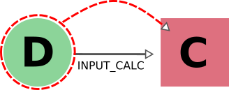 |
|
|
|
| 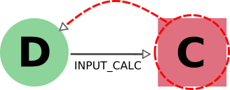 |
|
|
|
| 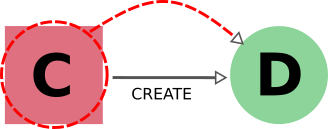 |
|
|
|
| 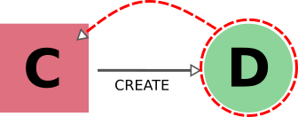 |
|
|
|
{kind=link}
{kind=link}
{kind=link}
{kind=link}
- 1
Although we provide the option to automatically export all calculations that use as input any targeted data node (by specifying
input_calc_forward=True) we currently do not provide the reciprocal option to delete all the data node inputs when targeting calculation nodes. This is mainly for the potential danger that would imply automatically enabling upwards traversal of the data provenance when deleting, which would make it extremely hard to predict or control the nodes that will be ultimately affected.
Data and Workflow Nodes¶
The behavior when considering input_work links is exactly the same as when considering input_calc links for the same reasons.
The case for return links is partially similar to the one for create one.
Indeed, it isn’t desirable to have a resulting database with missing outputs, so when exporting a workflow the returned data nodes will also be included (and when deleting a data node, the returning workflow will also be removed).
However, when exporting a returned node, the default behavior is not to traverse backwards through the return links, since a data node might be returned by several unrelated workflows (representing selection procedures for other studies, for example) that are unrelated to its creation.
The workflow responsible for coordinating its creation will be included in the export, not directly, but through the chain effect of including the creating calculation (through create_backward) and then including its calling workflows (through call_calc_backward and call_work_backward, see next sections).
Illustrative diagram (explicitly targeted node is encircled) |
Name of Rule |
Behavior when exporting target node |
Behavior when deleting target node |
|---|---|---|---|
| 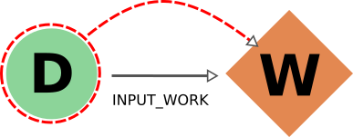 |
|
|
|
| 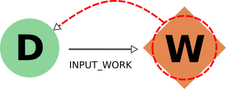 |
|
|
|
| 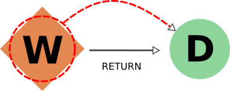 |
|
|
|
| 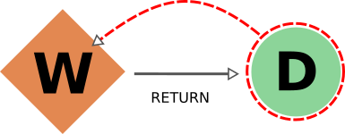 |
|
|
|
{kind=link}
{kind=link}
{kind=link}
{kind=link}
- 2
The reason to prevent the deletion of returned data nodes is that, since the logical provenance can be cyclical, this might end up deleting inputs and thus propagating the deletion process to other unrelated parts of the database. In most cases where you will want to delete a returned data node, you will be able to do so by setting
call_calc_forward=True(see below) andcreate_forward=True(which is the default value).
Workflows and Calculation Nodes¶
Finally, we will consider the possible (call) links between processes.
The results of a parent workflow depend critically on the sub-workflows or calculations launched by it.
When exporting a workflow node, we therefore always traverse its call links (both call_calc and call_work) in the forward direction to include all children processes (i.e. processes directly called by it).
Since the traversal rules are applied recursively, this means that also the children processes of any workflow that was a child of the targeted one will be exported as well, and so on.
Analogously, when deleting a process the same applies but in the opposite direction (backward), including the parent workflow of the targeted node (if there is one), and the parent of that parent, etc.
Since call links are followed backward by default, targeting one process for either export or deletion results in selecting not only all of its child processes but also all children of any of its parent processes.
As a result of all call links being traversed in both directions, targeting any of the process nodes in a workflow will mean the inclusion of the other processes of that workflow as well.
Users can disable the traversal of call links in one of the directions (forward for deletion, backward for export) for fine-grained control (see examples below).
Illustrative diagram (explicitly targeted node is encircled) |
Name of Rule |
Behavior when exporting target node |
Behavior when deleting target node |
|---|---|---|---|
| 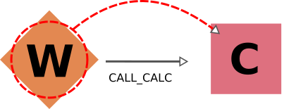 |
|
|
|
| 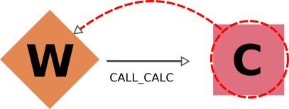 |
|
|
|
| 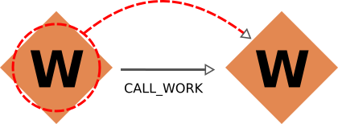 |
|
|
|
| 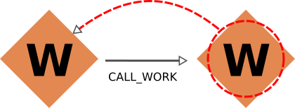 |
|
|
|
{kind=link}
{kind=link}
{kind=link}
{kind=link}
Cascading rules: an example¶
In the previous sections we have described the basic rules used by AiiDA to decide which nodes should also be included from an initial list of nodes to delete or export. These rules are applied recursively: as new nodes are included in the deletion (or export)list, the rules are applied to them as well until no new nodes are included. Therefore, the consequence of using these features on a given set of nodes may not always be straightforward, and the final set might include more nodes than naively expected.
Let us first focus on the data provenance only (i.e., only input_calc and create links). The following two rules apply when going in the forward direction:
If you delete a data node, any calculation that uses it as input will always be deleted as well (
input_calc_forward=True).If you delete a calculation node, any output data node will be deleted by default (
create_forward=True).
The consequence of these two together is a “chain reaction” in which every node that can be traced back through the data provenance to any of the initial targeted nodes will end up being deleted as well.
The reciprocal is true for the export: the default behavior is that every ancestor will also be exported by default (because create_backward is True by default and input_calc_backward is always True).
In regards to the connection between data provenance and logical provenance, the most important thing to understand is how the default behavior of the program treats the highest-level workflows as the units to be handled. The logic behind this is the assumption that the typical user of the program will be dealing with it mostly in an interactive way, running pre-defined workflows through the verdi command line without needing a detailed knowledge of their internal procedures. The default behavior then was designed to reproduce the most intuitive outcomes for this type of usage.
This behavior is basically the result of the settings of call_calc_forward=True and call_work_forward=True, which makes that the inclusion of a process node will also imply the inclusion of any child or parent process node as well.
Following this rules in a recursive way leads to the command affecting all the processes within any given workflow: in this way, nodes that are sub-processes of a given highest-level workflow will end up grouped together, in the sense that (by default) they will all be affected in the same way when deleting or exporting.
More freedom to further customize the selection of sections to export or delete is available through the specific switchable flags for each functionality (although the final sections must always comply with the non-switchable rules, see above). However, this usually requires a deeper understanding of the traversal rules and may imply a more thorough analysis of the particular graph. To better illustrate this, we will now consider the application of the deletion procedure to the following graph:

As you can see, W1 and W2 describe two similar but independent procedures that were launched by a single parent workflow W0. A typical user would have obtained this by directly running this workflow W0 to obtain the results D3 and D4 from the inputs D1 and D2, and may even be unaware of the internal division of W0 into two sub-Workflows W1 and W2. Hence, if the user considers the workflow (meaning, the whole set of nodes produced by it) no longer necessary, the intuitive thing to do in order to remove it from its database would be by targeting the workflow node W0 for deletion. Indeed, this would produce the desired result:

The nodes W1 and W2 would be included because W0 is being targeted (call_work_forward=True), then the nodes C1 and C2 would also be included (call_calc_forward=True), and finally the nodes D3 and D4 would end up being included as well (create_forward=True).
In the end, only the inputs D1 and D2 remain (since input_work_backward=False always and input_calc_backward=False by default).
The same result would occur if the user were to target the output nodes instead (intending to delete everything associated with the obtention of those results). It is important to notice that even if the user deletes only one of the outputs, the whole set of nodes generated by the workflow would be deleted, and not just the ones associated to the targeted data node. As the results D3 and D4 where obtained from the same high-level process W0, then the default behavior has the underlying assumption that they are interconnected and not independent from one another (as if they were two different outputs of a single calculation).

In this case, the node C1 would first be included because the data node D3 is being targeted (create_reverse=True), and this in turn would include the node W1 (call_calc_reverse=True) and then its parent workflow W0 (call_work_reverse=True).
Then nodes W2, C2 and D4 will be included because W0 was included, for the same reasons that were explained in the paragraphs above.
Customizing the graph traversal (for deletion or export)¶
This dependency between nodes becomes particularly relevant when, for example, a user with more knowledge of the internal procedures of the parent workflow W0 wants to only delete the calculations and results associated to workflow W1. The intuitive action of targeting W1 does not produce the desired outcome:

Indeed C1 and D4 will be deleted (through call_calc_forward from W1 to C1 and create_forward from C1 to D3), but so will W0 (through call_work_reverse from W1), W2 (call_work_forward from W0), C2 (call_calc_forward from W2) and D4 (create_forward from C2).
The way to achieve the desired outcome is not trivial, although in some situations like this, one could propose case-specific solutions such as targeting W1 with the switchable flag call_work_forward=False (preventing the traversal from W0 to W2):
{kind=link}
However, this approach is not generally applicable, and wouldn’t work if W1 had sub-workflows that needed to be deleted as well. A more general approach is to first sever the connection to W2 by deleting node W0 with all switchable traversal rules turned off. Then, once the independence of W1 and W2 is explicitly reflected in the graph, node W1 can be deleted with the default settings.

It is worth noting that if the workflow W0 was itself part of a higher-level workflow, all that higher-level logic would be deleted due to the non-switchable rule call_work_reverse=True.
This is an inevitable outcome of deleting part of a workflow, since due to the loss of that information it has become incomplete and it makes no sense to keep it.